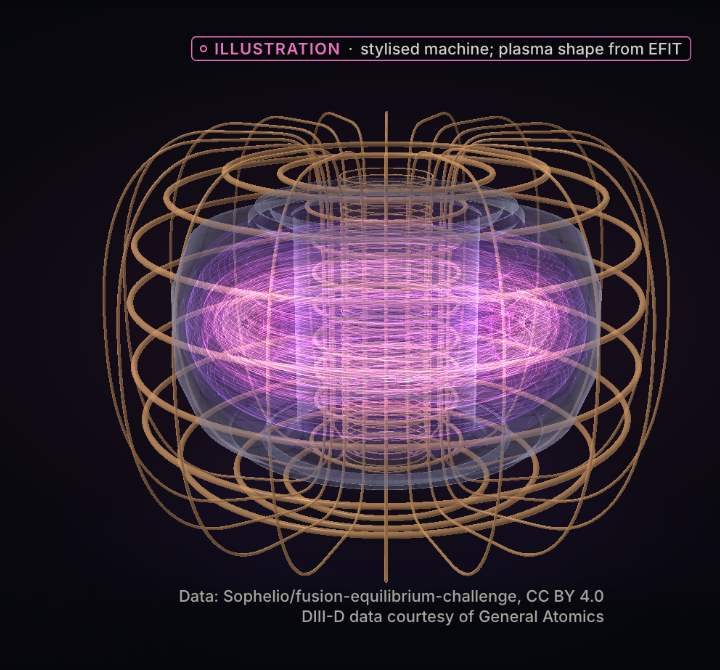

ILLUSTRATIONstylised machine; plasma shape from EFITNeurIPS 2026 · Fusion Equilibrium Challenge
2nd in Challenge 1 · DIII-D · solo entry
Xiaoxiao Zhouyi · University of Bristol
Atlanta · 12 December 2026
Scroll to read the talk · 11 scenes · 38 steps · about 12 minutes